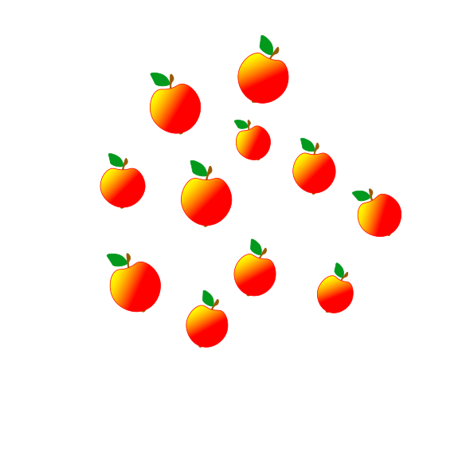
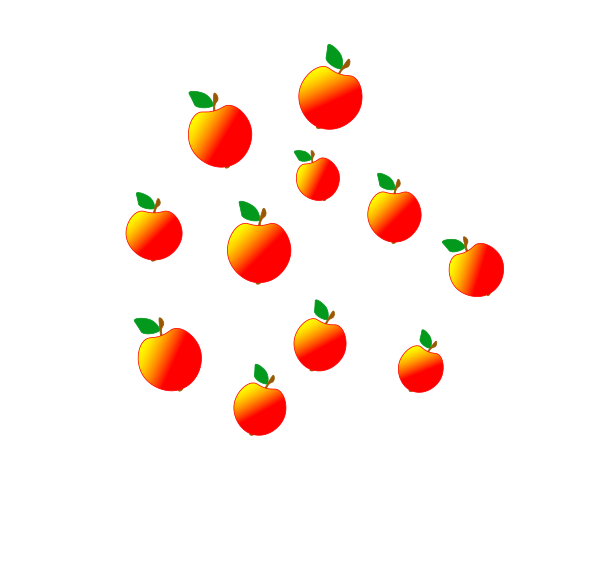

I met a child a year ago whose eyes would never see.
She asked me with a timid smile, "What colour is a tree?"
"In summertime a tree is green; In autumn gold and red;
In winter they are frosted white when all their leaves are shed."
"I know the sky is blue," she said. "And silver is the sand;
And apples are the brightest red. What colour is a man?"
Man is many colours child: Some are yellow, some are brown.
And some are black as sightlessness, Some white as eiderdown."
She took her crayons from a box And placed them in my glove
And said, "By mixing all of these Comes my favourite colour--love."


 
